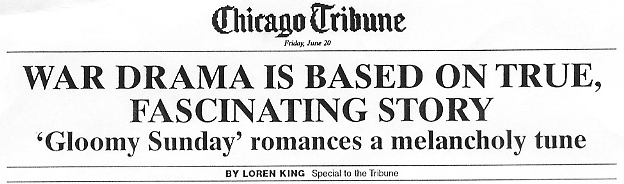
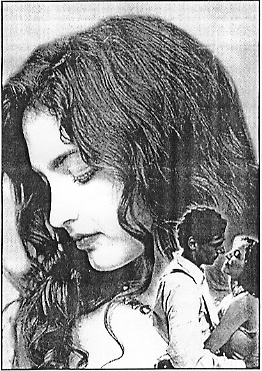

|
From:
North of
Jewfish Creek
Dear Friend & Subscriber,
I am
a person who is passionate about purity.
I
don't believe in multi-tasking. If you want to sell me something, the best way
to LOSE the sale is tell me about the extra features that "something" has.
I don't want my cell phone to double as a blender. I don't want call waiting,
caller ID, voicemail, video games, a walkie talkie function, an electronic phone
book, day planner or none of that shit. All I want is...
|
A Cell Phone
That Will Let Me |
|
Make And Receive Phone Calls! |
I NEVER retrieve my voicemail messages. I don't even want any of my phones to
have the ability to allow someone to leave a message. I realize this is a
valuable function for many people such as doctors and sales people and so forth.
But, I personally HATE coming home after a long day's work and having to listen
to a lot of messages that I am, for some reason or another, supposed to be
"obligated" to deal with.
Until recently, my son Bond, had three cell phones. No more. He took them
to the Mohave Desert and used one of his handguns to "murder" each one of them.
He left all three cell phone "carcasses" riddled with bullets dead and useless
in the desert. You know what he later told me? He said...
|
It Was The
Most |
|
Liberating Thing |
|
He'd Ever Done! |
I
also like purity in people. I, myself, am more or less a "one-trick-pony". I
proclaim I am the "World's Best Copywriter". I don't say I am the world's best
dancer, the world's champion powerlifter, the fastest runner in the world, a
time-management expert and so on. I believe I'm the world's best copywriter (for
real) and, that's it. If you want the world's best at something else, you gotta
look elsewhere.
Have
you ever heard Enya sing? Her voice is utter magic. With a few very rare
exceptions, she does ALL the vocals, ALL the instrumentation, etc. Sometimes, it
takes her more than 2-years to produce a single CD but, the results are
heavenly. Her music has been scientifically proven to lower blood pressure,
lower the heart rate and, in general, have a remarkable relaxing effect on
people who are (and that includes everyone I know) tense.
I
saw a music awards show not too long ago. Lip-syncing singers, carefully
choreographed stage maneuvers, and every performer's performance meticulously
calculated to snag every micro-second of the audience's attention.
And
then comes Enya. Dressed elegantly simple. She sits at the piano with no fanfare
and begins playing and singing with her magical voice. The audience was hushed
and spellbound. Her presence and performance would be analogous to the tackiness
of Madonna standing next to the elegance and real class of Princess Di or
Jackie Kennedy.
Here
in Florida we have more boats than anywhere else in the world. Almost all of
them are a "compromise". Except one. It's the "Hell's Bay" line of flats boats
made by former Florida Keys fishing guide, Hal Chittum. It only weighs 350
pounds, has no extras whatsoever, goes 35 MPH with a 2-stroke 25 HP outboard,
and it goes and floats in...
Only 2-1/2 Inches
Of Water!
It's perfect. Perfect for flats
fishing and NOTHING else.
Purity.
There are some products (very few) that have retained their purity and, believe
it or not, the famous "Slinky" is one of those products. An American lady has
been running the company for about three decades, refuses to use anything but
American steel, keeps the price as low as humanly possible... and... they still
sell today by the thousands.
Purity.
Recently, I saw a movie which was perhaps the best I've ever seen in my life.
Despite its title, "Gloomy Sunday", in a curious way it is the most inspiring
movie I've ever seen. The female lead, Erika Marozsan, is the most magnetic and
bewitching woman I've ever seen in a movie.
This
movie should have easily won the Oscar for Best Foreign Language Film... but...
it wasn't even nominated. If God was to allow you to only see one movie for all
the rest of your life...
It Should Be
This One!
What follows is a reprint of a
review of this film from the Chicago Tribune:
|

|
|
This
sumptuous film is a dramatic, Holocaust-themed story woven around a fascinating,
true story of a famous Hungarian musical composition, Gloomy Sunday. Not only do
the lush visuals, shot on location in Hungary, whisk one back in time and place,
but the film itself is a throwback to the sort of powerful, straightforward
romantic dramas set in turbulent times -- classics such as Casablanca and the
recent German hit Nowhere in Africa -- that are sadly lacking from Hollywood
these days.
The elegant
structure of Gloomy Sunday opens onto the present day, where a successful German
and his family arrive at a famous Budapest restaurant to celebrate the mans 80th
birthday. After requesting that the violinist play the mournful tune, the man is
stricken by a heart attack. The film then flashes back to the 1930s, when the
restaurant, Szabo, was run by affable Laszlo Szabo (a terrific performance by
Joachim Krol), a Hungarian Jew.
It isnt hard
to see what the gorgeous, fiery Ilona (Erika Marozsan) sees in her boss. Laszlo
|
isn't dashing or particularly magnetic, but he's a happy, successful man who's
self-assured enough to give Ilona her freedom to chose lovers, even if it leaves
him the odd man out.

One of those
lovers is Andras (Stefano Dionisi), the striking pianist hired to serenade
diners at Szabo. The three principals develop a believable and likable love
triangle that echoes Jules and Jim in its warmth and civility, as Laszlo and
Andras bond over a shared love for Ilona. Laszlo and Ilona help Andras achieve
recognition for his original song, Gloomy Sunday, which he penned for Ilona.
In the film, the
song takes on mythic elements, as it did shortly after |
it was composed in
1935 by two Hungarians, Rezso Seress and Laszlo Javor. The melancholy, popular
tune was blamed for a rash of suicides in Hungary in 1936. (Several American
musicians and singers recorded the Hungarian Hymnsong, most famously Billie
Holiday.)
The string
of suicides is recounted in the film, but what could have been overly
melodramatic is handled with grace and skill by the director and the actors. The
sorrowful elements of the music foreshadow the tragedy to come as the Nazis
march across Europe and into Hungary.
The films
fourth pivotal character is Mr. Wieck, the young German who first shows up at
Szabo as a businessman smitten by Ilona and later returns as an SS officer.
Laszlo and Ilona reluctantly, but hopefully, show him kindness. There is a
searing moment in the film when Laszlo, the accommodating restaurateur, tells a
lacerating joke to appease the Nazi. The ingenious, satisfying and perfectly
executed twist that concludes Gloomy Sunday is a memorable moment in a
remarkable movie. |
So,
what's the point of me writing about it in this newsletter? "Gloomy Sunday" is
the purest movie I've ever seen. I left feeling much less mature than I did when
I went in. It does indeed raise questions not easily answered. About the choices
we make in life, loyalty and morality.
It
is like no other movie I've ever seen.
So
what? Well, here's "so what": People have been after me to write a book on human
sexuality for years. But something kept holding me back. In my mind, what I had
to say was not yet complete. Then I saw "Gloomy Sunday"... and... I walked out
100% inspired to write that book.
The
inspiration came from the purity of Erika Marozsan's portrayal of the
gorgeous, fiery Ilona (the female lead) and her open, honest and refreshingly
candid attitude towards sex.
I
personally met (very briefly) both Erika and Richard Schoeps (one of the film's
producers), and had the opportunity to tell them how much the film had meant to
me. I also told them their film (because of what I was about to write in this
newsletter) would soon be famous in 90 countries.
Purity
Inspires Me!
When
I see an athlete who concentrates on nothing but golf (like Tiger Woods) I am
inspired.
If
there is a message here, it is this: Find your true passion in life and follow
it. Mine was to become the best copywriter in the world and, I believe, I have
achieved that goal.
And
look for inspiration from other "pure" people who do not allow their purity to
be compromised by "political correctness", the flavor of the week... or...
what's considered "cool" at the moment. Those things will not endure.
Hell's Bay flats boats, the Slinky, Tiger Woods, Enya and the movie "Gloomy
Sunday" will be with us forever. And for God's sake...
Go See The
Movie!
And tell 'em Gary Halbert sentja.
| |
Sincerely, |
| |
 |
| |
Gary C. Halbert |
P.S. Get ready for a "killer" Gary
Halbert seminar around the last week in April or the first week in
May. Make no plans. You absolutely won't want to miss this one.
Especially, if you want to learn how to... write
a website...
That Will
Make You Rich!
Peace.
Copyright © 2004 Gary C. Halbert. All Rights
Reserved. |